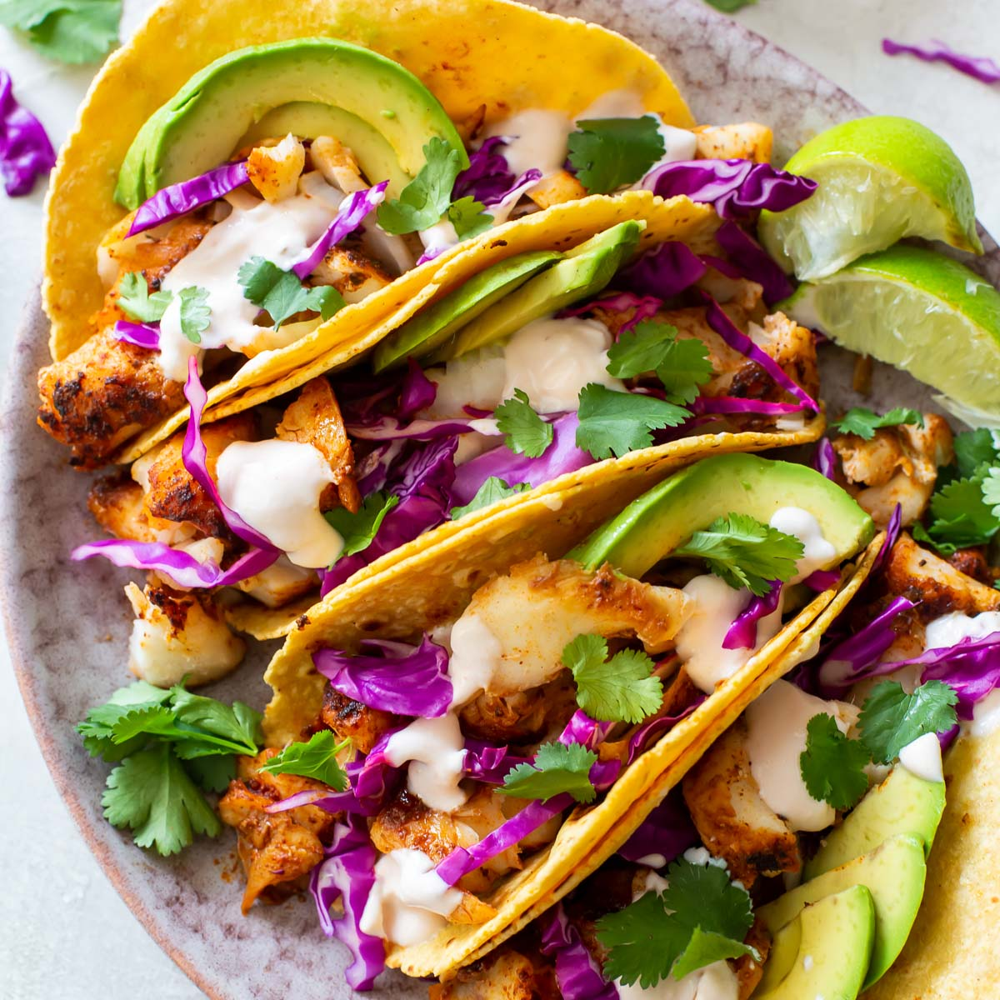

Fish Tacos

These fish tacos taste just like home. I'm from San Diego. Serve with homemade
pico de gallo and lime wedges to squeeze on top.
Ingredients
- 1 quart oil for frying
- 1 pound cod fillets, cut into 2 to 3 ounce portions
- 2 tablespoons all-purpose flour, or more as needed
- 1 (12 ounce) package corn tortillas
- ½ medium head cabbage, finely shredded
Steps
- Make beer batter: Combine flour, cornstarch, baking powder, and salt in a large bowl. Blend beer and egg in a separate bowl, then quickly stir into
flour mixture until combined with a few lumps remaining.
- Make white sauce: Mix together yogurt and mayonnaise in a medium bowl. Gradually stir in fresh lime juice until consistency is slightly runny.
Season
with jalapeño, capers, cayenne, oregano, cumin, and dill.
- Start fish tacos: Heat oil in a deep-fryer to 375 degrees F (190 degrees C).
- Dust fish pieces lightly with flour. Dip into beer batter, then fry in hot oil until crisp and golden brown. Drain on paper towels.
- Lightly fry tortillas in hot oil until just crisped, but not too crisp. Drain on paper towels.
- Place fried fish in tortillas; top with shredded cabbage and white sauce.
Back To Recipes List